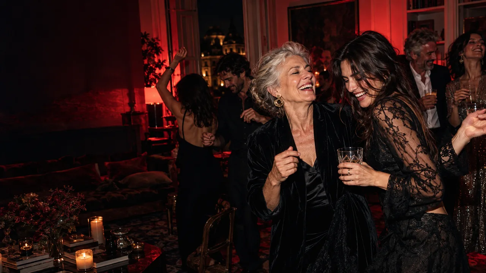
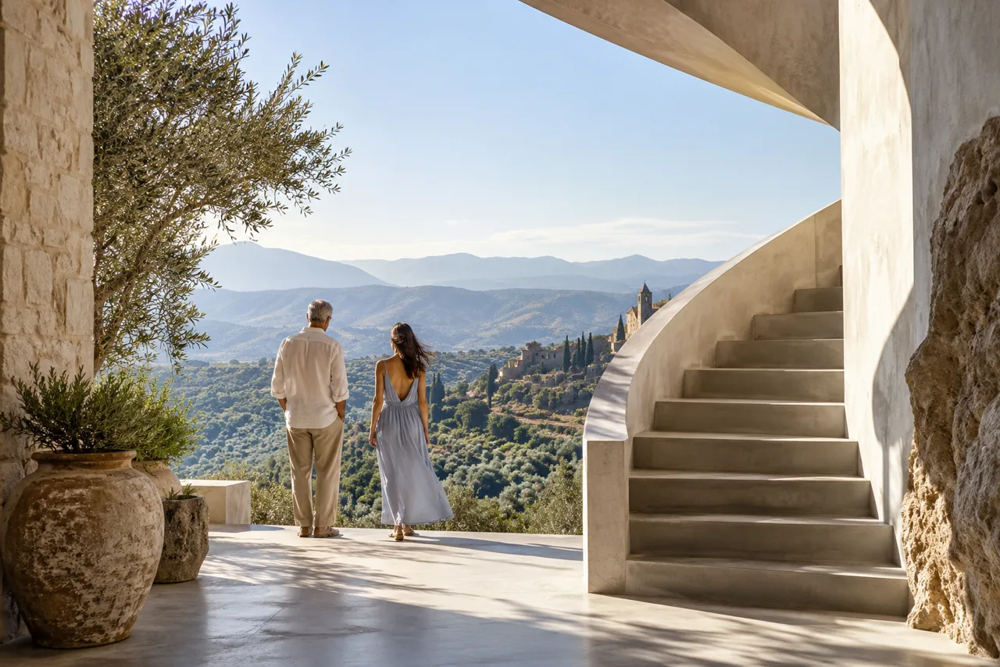

Her grandmother's Sunday kitchen.
Not a colour scheme. Not a venue brief. A handwritten recipe, a familiar smell and everyone gathered at one table.

A creative studio for the wonderfully specific · Madrid, Spain
Bespoke private events, celebrations and tailor-made experiences in Madrid and across Spain. Designed around people, not packages.
Some people collect memories. Others collect places, sounds, strange little rituals, and stories nobody else quite understands.
We begin there. With the person, the private joke, the detail only their closest people would recognise.
Not a theme. A portrait.
A single memory can become the thread that holds an entire experience together. Here is an illustrative concept study.
Not a colour scheme. Not a venue brief. A handwritten recipe, a familiar smell and everyone gathered at one table.
The people who matter take part. The detail turns into a ritual rather than decoration.
A personal memory becomes a shared world. The images show a fictional creative direction, not photographs of a client event.
These atmospheres show the range of our imagination. They are not packages or limits on what we can make.
Unapologetically alive. A private celebration that feels like the best scene nobody thought to write.
Explore private events ↗The extraordinary in the smallest details. Soft light, familiar faces and room for a moment to be felt.
Explore celebrations ↗
Some stories aren't meant to be predictable. A place, a journey or a surprise that feels entirely yours.
Explore experiences ↗Until the first projects are ready to share, these are clearly labelled concept studies: examples of how a person can inspire an original experience.
The detail
She loved cooking with the people she trusted and disliked being the centre of a room.
The idea
A meal everyone makes together, with no speech and no spotlight.
The detail
An old film ticket kept for years.
The idea
A private reunion unfolds like scenes from a favourite film.
Imagination needs a production plan. We shape the creative direction, find the right collaborators and coordinate the details that make the day feel effortless.
A concept becomes a real experience through decisions that work together, from the first location visit to the final contingency plan.
Atmosphere, experience design, location scouting and the details that reveal the person.
Collaborator coordination, schedules, guest flow, logistics and contingency planning.
A conversation about the person at the centre of it all. You can arrive with a fully formed idea or just one detail you can't stop thinking about.
We explore a direction that belongs to them, then plan how to bring it to life in Madrid or elsewhere in Spain where the project is feasible.
A strange idea, a small obsession or a very specific memory is enough. Share as much as you like. The little exercise below is optional.
Four optional prompts. Your answers stay in this browser until you choose to open an email draft or copy them. This is a creative starting point, not AI.
Opening an email draft does not send it. Please send it from your mail app.